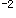

A.1小时
B.2小时
C.4小时
D.6小时
E.8小时
参考答案：C
A.避污纸是备用的清洁纸片
B.使用避污纸可保持双手或物品不被污染
C.取避污纸时，可掀开撕取
D.保持避污纸清洁，以防交叉感染
E.避污纸用后弃于污物桶内，集中焚烧处理
A.保护工作人员
B.保护患者
C.防止病原微生物播散
D.防水作用
E.避免交叉感染
参考答案：D
A.甲型肝炎的传染源主要是患者
B.乙型肝炎的传染源主要是患者及病毒携带者
C.甲型肝炎主要是消化道传播
D.病后均可产生免疫力
E.甲、乙两型之间有交叉免疫
参考答案：E
A.绿色
B.红色
C.黄色
D.黑色
E.褐色
A.引流棉条
B.废弃的被服
C.废弃的药品
D.被患者的血液、体液污染的物品
E.使用后的一次性医疗用品
A.包装袋结实、耐用
B.分类收集、密闭包装
C.针头、手术刀等放入防刺破的锐器盒
D.传染患者产生的医疗废物应使用双层包装袋包装
E.包装袋装满后去焚烧
A.门诊病人
B.住院病人
C.探视者
D.陪护家属
E.朋友
参考答案：B
A.入院后24小时发生感染
B.入院后48小时发生感染
C.入院后32小时发生感染
D.入院后16小时发生感染
E.入院后4小时发生感染
A.新生儿经胎盘获得（出生后48小时内发病）的感染，如单纯疱疹病毒等
B.由于诊疗措施激活的潜在性感染，如疱疹病毒等的感染
C.皮肤黏膜开放性伤口只有细菌繁殖而无炎症表现
D.患者原有的慢性感染在医院内急性发作
E.创伤或非生物性因子刺激产生的炎症表现
A.部分医院感染是可以预防的
B.洗手是预防医院感染的重要措施
C.医院感染一定是由于消毒隔离缺陷所致
D.内源性医院感染是医院感染的重要原因
E.滥用抗菌药物可致二重感染
A.环境感染
B.交叉感染
C.自身感染
D.医源性感染
E.不属于医院感染
A.将适当载体染以一定量的特定微生物，用于指示消毒或灭菌效果的制品
B.接种了一定量特定试验微生物的载体
C.对特定的灭菌过程有特定抵抗力的试验菌（毒）株
D.用于对消毒或灭菌的效果进行检测的指示物
E.生物菌片
参考答案：A
A.分类收集
B.医院中心废物存放地
C.感染性废弃物的消毒处理
D.液体污物
E.固体污物
A.2
B.3
C.4
D.5
E.6
A.伤口
B.分泌物
C.人和动物
D.体液
E.药物
A.尽量减少侵入性操作
B.全身使用广谱抗生素预防感染
C.积极治疗局部感染病灶
D.保护性隔离
E.注射相关疫苗
A.是指病原微生物从感染源传到新宿主的途径和方式
B.微生物可通过多种途径传播
C.同一微生物只能通过一种途径传播
D.接触传播是医院感染主要而常见的传播途径
E.飞沫悬浮时间短，播散距离一般小于1m，不需空气隔离或消毒
A.周围已感染或带菌的患者
B.病房中一切设备和其他物体
C.医院带菌的工作人员
D.带菌的患者家属及探视者
E.未彻底消毒灭菌的医疗器械
A.已感染的病人
B.病人带菌者
C.健康带菌者
D.动物传染源
E.环境
A.消除感染源
B.改善易感宿主的免疫力
C.阻断传播途径
D.建立有效的医院感染监测系统
E.定期的质量评价
A.住院时间越长，获得医院感染的危险性越大
B.手术时间越长，获得医院感染的危险性越大
C.侵入性操作的时间越长，获得医院感染的危险性越大
D.用剃刀备皮者发生医院感染的危险性高于剪毛刀备皮者
E.获得医院感染的危险性与年龄成正比
A.控制或消灭感染源
B.切断移位途径
C.对易感宿主施行保护性隔离
D.增强易感宿主免疫力
E.切断传播途径
A.医生由于锐器伤感染丙肝
B.病人直接经输血感染乙肝
C.病人直接通过纤维内镜感染金葡菌
D.病人直接通过院内食物获得痢疾
E.病人直接通过口服药品感染链球菌
A.空气传播
B.飞沫传播
C.直接接触传播
D.间接接触传播
E.医源性传播
A.市售铝饭盒与搪瓷盒
B.带通气孔的器具
C.全棉布
D.一次性无纺布
E.一次性复合材料（如纸塑包装）
A.大于95%
B.大于90%
C.小于95%
D.小于90%
E.大于85%
A.不少于5%，漏报率应低于10%
B.不少于10%，漏报率应低于10%
C.不少于10%，漏报率应低于15%
D.不少于10%．漏报率应低于20%
E.不少于10%，漏报率应低于30%
A.易感人群
B.门诊患者
C.危险人群
D.住院患者
E.就诊人群
A.5cfu/m
B.10cfu/m
C.15cfu/m
D.200cfu/m
E.500cfu/m
题目解析：层流洁净手术室、层流洁净病房： 空气cfu/m3：≤10 物体表面cfu/cm3：≤5 医护人员手cfu/cm3 ：≤5
A.被检人五指并拢
B.一只手的涂搽面积约30cm
C.用浸有无菌洗脱液的棉拭子在双手指屈面从指端到指根往返涂搽2次
D.涂搽时转动采样棉拭子
E.剪去操作者手接触部位，投入含相应中和剂的无菌洗脱液试管内送检
A.医院感染管理科应于24小时内报告主管院长和医务处（科），并通报相关部门
B.医院应于24小时内报告当地卫生行政部门
C.全国医院感染监控网单位在收到报告24小时后报全国医院感染监控管理培训基地
D.当地卫生行政部门应于24小时内逐级上报至省卫生行政部门
E.省卫生行政部门应于24小时内上报国务院卫生行政部门
A.Ⅰ类区域的工作人员，细菌总数≤5cfu/cm，未检出金葡菌、大肠埃希菌、铜绿假单胞菌
B.Ⅱ类区域的工作人员，细菌总数≤10cfu/cm，未检出金葡菌、大肠埃希菌、铜绿假单胞菌
C.Ⅲ类区域的工作人员，细菌总数≤15cfu/cm，未检出金葡菌、大肠埃希菌、铜绿假单胞菌
D.Ⅳ类区域的工作人员，细菌总数≤20cfu/cm，未检出金葡菌、大肠埃希菌、铜绿假单胞菌
E.新生儿室的工作人员，细菌总数≤5cfu/cm，可检出溶血性链球菌
A.衡量所研究的暴露因素与发生医院感染之间统计学联系的强度大小
B.相对危险度的值等于1时，表明所研究的因素与感染发生之间无联系
C.相对危险度的值大于1时，说明该因素可减少医院感染的发作
D.是指暴露组与非暴露组医院感染，概率之比
E.表示暴露组的住院患者中发生医院感染的危险性的倍数
A.普通手术室，细菌总数≤5cfu/cm，未检出致病菌
B.急诊抢救室，细菌总数≤10cfu/cm，未检出致病菌
C.肝炎病房，细菌总数≤15cfu/cm，未检出致病菌
D.注射室，细菌总数≤15cfu/cm，未检出致病菌
E.新生儿室的工作人员，细菌总数≤5cfu/cm，未检出致病菌
A.医院感染患病率
B.构成比
C.相对危险度
D.医院感染例次发生率
E.医院感染发生率
A.0.5%
B.1%
C.2%
D.3%
E.4%
A.先将发病患者转移到安全区
B.先将未发病患者转移到安全区
C.分组护理
D.单元隔离
E.进行流行病学调查
A.有效氯100mg/L
B.有效氯250mg/L
C.有效氯500mg/L
D.有效氯1000mg/L
E.有效氯5000mg/L
A.下排气，预真空和正压排气法三种
B.下排气，预真空两种
C.下排气一种
D.预真空和正压排气法两种
E.预真空一种
A.干热灭菌
B.压力蒸汽灭菌
C.环氧乙烷灭菌
D.等离子体灭菌
E.甲醛低温灭菌
A.10
B.10
C.10
D.10
E.10
A.80%
B.90%
C.70%
D.60%
E.85%
A.能杀灭细菌繁殖体
B.能杀灭细菌繁殖体、部分真菌和病毒
C.能杀灭细菌繁殖体、部分真菌和病毒，不能杀灭细菌芽孢的药物
D.能杀灭细菌繁殖体和部分芽孢
E.能杀灭所有微生物
A.距地面≥10cm，距墙壁≥5cm
B.距地面≥20cm，距墙壁≥5cm
C.距地面≥30cm，距墙壁≥15cm
D.距地面≥40cm，距墙壁≥5cm
E.距地面≥50cm，距墙壁≥5cm
A.灭菌
B.消毒
C.高水平消毒
D.中水平消毒
E.低水平消毒
A.被采表面<100cm，取其1/2表面积
B.被采表面>100cm，取30cm
C.被采表面>100cm，取50cm
D.被采表面>100cm，取60cm
E.被采表面>100cm，取100cm
A.玻璃类制品
B.棉纱敷料
C.塑料制品
D.金属器械
E.搪瓷类
A.不需进行灭菌处理
B.必须清洗干净后灭菌处理
C.进行消毒处理
D.清洗干净即可
E.必须进行灭菌处理
A.环氧乙烷灭菌法
B.戊二醛浸泡灭菌法
C.辐射灭菌法
D.过氧化氢浸泡灭菌法
E.微波灭菌法
A.乳酸
B.甲醛
C.新洁尔灭
D.食醋
E.过氧乙酸
A.口腔含漱
B.外科伤口清洗
C.浸泡金属器械
D.浸泡塑料制品
E.饮用水消毒
A.硝酸钠
B.硫酸钠
C.碳酸氢钠
D.亚硝酸钠
E.乳酸钠
A.灭菌剂
B.低效消毒剂
C.中效消毒剂
D.中高效消毒剂
E.高效消毒剂
B.碳酸氢钠
C.硫酸钠
D.乳酸钠
E.氢氧化钠
A.包装材料
B.医院规模
C.封口的严密性
D.灭菌条件
E.储存环境
A.无危险性物品
B.低度危险性物品
C.中低度危险性物品
D.中度危险性物品
E.高度危险性物品
A.灭菌法
B.低效消毒法
C.中效消毒法
D.高效消毒法
E.机械清洗法
A.手术器械和用品
B.穿刺针、输血器材、输液器材
C.注射的药物和液体
D.血液和血液制品
E.喉镜
A.清洗充分，刷洗到位
B.酶清洗液多次使用
C.腹腔镜部件复杂，不能拆卸
D.消毒液浓度不够
E.浸泡消毒时间不足，只达到高水平消毒，未达到灭菌效果
A.接触病人前后应洗手
B.接触有破损的皮肤、黏膜前后要洗手
C.进行侵袭性操作前后要洗手
D.进行无菌技术操作前后要洗手
E.戴无菌手套后要洗手
A.含醇类或胍类（醋酸氯己定等）复配的手消毒液
B.75%乙醇溶液
C.70%异丙醇溶液
D.0.1%苯扎溴铵
E.有效碘含量为5000mg/L的碘伏溶液
A.医疗设备
B.医务人员的手
C.病人间的接触
D.病人的排泄物、分泌物
E.一次性物品
A.病原微生物污染皮肤的消毒
B.传染病病原体污染皮肤的消毒
C.手术切口部位的皮肤消毒
D.穿刺部位的皮肤消毒
E.无须处理
A.层流洁净手术室和层流洁净病房
B.产房、婴儿室、早产儿室
C.供应室无菌室
D.注射室、治疗室、换药室
E.急诊室、化验室及各类普通病房
A.病毒性肝炎
B.百日咳
C.白喉
D.疟疾
E.乙型脑炎
A.护士值班室属于清洁区
B.病人的物品可以进入清洁区
C.各类标本采集后可暂时存放在清洁区
D.工作人员进入清洁区必须穿隔离衣
E.病人可以穿隔离衣进入清洁区
A.严密隔离病室
B.化验室
C.患者浴室
D.病区走廊
E.治疗室
A.隔离单位标记明显
B.门口设消毒盆、手刷、毛巾
C.脚垫用消毒液浸湿
D.穿隔离衣后不得进入值班室
E.使用过的物品冲洗后立即消毒
A.高压蒸汽灭菌法
B.间歇灭菌法
C.焚烧法
D.消毒浸泡法
E.日光曝晒
A.口罩必须盖住口鼻
B.口罩潮湿应立即更换
C.口罩用完以后，污染面向外折叠，放置备用
D.不用时不能挂在胸前
E.不可用污染的手接触口罩
A.患者洗澡、更换清洁衣裤
B.个人用物经消毒后方可带出病区
C.被服及时送洗衣房清洗
D.室内空气可用喷洒消毒
E.病床、桌椅用消毒液擦拭
A.血液
B.体液
C.汗液
D.分泌物
E.排泄物
A.病人用过的物品及病室应消毒
B.分泌物、排泄物等应消毒后处理
C.精密仪器用后可不用消毒
D.严格执行陪伴和探视制度
E.经医生下达医嘱后，方可解除隔离
A.利器用后放在黄色塑料袋内
B.利器用后放在防水、耐刺的容器内
C.针头不复帽
D.利器原则上不复用
E.不用手去折断针头
A.预防措施是面向所有的病人
B.不关心其诊断是否是传染性疾病，均实施以预防为主的标准预防
C.标准预防综合了普通预防和体内物质隔离的对象，把血液、体液、分泌物、排泄物均当成具有传染性进行隔离预防
D.以降低医务人员、病人、病人与病人间微生物传播的危险性
E.是仅基于传播途径的预防
A.切断传播途径
B.保护易感者
C.控制感染源
D.消灭感染源
E.进行集中消毒处理
A.为确保预防效果将万古霉素作为常规用药
B.一般在术前30～60分钟给药
C.经静脉途径给药
D.给予一次足量抗感染药物
E.手术时间超过4小时可术中加用一次
A.对一切感染症都应尽早使用高效广谱抗菌药物
B.在治疗感染性疾病时，考虑病原体对抗菌药物的敏感性
C.各种抗菌药物的应用能够完全预防医院感染
D.抗菌药物可用作消毒剂，对皮肤伤口消毒
E.应用抗菌药物可治愈所有发热患者
A.人工心脏瓣膜置换手术
B.扁桃体切除术
C.严重烧伤
D.结肠手术
E.经阴道子宫切除术
A.在进行护理操作时，可能接触了病人的血液、体液、分泌物、排泄物和污染的器械
B.护理两个病人之间
C.脱手套后
D.护理人员给病人测血压后，进行导尿前
E.与病人交谈后
A.静脉滴注抗感染药物时原则上选择5%葡萄糖溶液
B.原则上2种抗感染药物不宜置于同一溶液中静脉滴注
C.氨基糖苷类抗感染药物首选静脉推注
D.红霉素及两性霉素B静脉滴注可采用间歇给药方案
E.β-内酰胺类抗感染药物静脉滴注时，采用连续给药方案
A.接触隔离
B.消化道隔离
C.呼吸道隔离
D.严密隔离
E.保护性隔离
A.对一切感染均应早用广谱抗生素
B.对病毒感染的病人也需要预防使用抗生素
C.手术有了抗生素无菌技术就不重要了
D.抗生素使感染病人治疗不成问题
E.治疗感染性疾病既要考虑使用抗生素，更要考虑病原菌对抗生素的敏感性
A.切口皮肤
B.皮下组织
C.深层软组织
D.脓肿切开术
E.手术所打开的器官
A.培训内容包括管理知识和专业知识
B.培训对象包括管理、医务、工勤人员
C.非专职人员每年不少于2小时培训
D.进修医师必须培训
E.实习医师必须培训
A.加强营养
B.缩短住院时间
C.术前2天开始使用抗生素进行预防
D.缩短手术时间
E.术前做好术区皮肤准备
A.加强生活护理
B.协助患者进行增加肺活量的训练
C.严格消毒隔离制度
D.保持室内环境清洁、空气新鲜
E.鼓励家属探视，满足患者心理需求
A.股静脉
B.锁骨下静脉
C.头静脉
D.贵要静脉
E.肘正中静脉
A.胃肠道反应
B.球后视神经炎
C.骨髓抑制
D.肝损害
E.耳毒性
A.定期进行身体检查
B.养成良好的洗手习惯
C.接触被患者血液污染的器械时戴手套
D.为患者进行口腔治疗时，戴口罩和眼防护罩
E.被乙肝表面抗原阳性的器械刺破皮肤时，应及时进行乙肝疫苗的注射
A.2学时
B.3学时
C.4学时
D.5学时
E.6学时
A.某医院、某科室医院感染发病率显著超过历年散发发病率水平
B.某医院、某科室医院感染发病率超过历年散发发病率水平
C.某医院、某科室医院感染发病率显著超过散发发病率水平
D.某医院、某科室医院感染发病率高于历年散发发病率水平
E.某医院、某科室医院感染发病率与历年散发发病率水平相当
A.不得少于5人
B.不得少于4人
C.不得少于3人
D.不得少于2人
E.不得少于1人
A.立即将发病患者转入传染病院
B.调查了解发病情况
C.查阅病历及细菌检查结果
D.切断传播途径
E.掌握暴发流行的时间及分布
A.4小时
B.6小时
C.12小时
D.24小时
E.48小时
A.1学时
B.2学时
C.3学时
D.4学时
E.5学时
A.正确进行吸痰操作
B.每日给予口腔护理
C.每日更换湿化瓶中蒸馏水
D.定时引流声门下分泌物
E.防止冷凝水倒流
A.协助病人取半卧位
B.鼻饲液应少量多次给予
C.使用硫糖铝保护胃黏膜
D.每日给予口腔护理
E.使用H受体阻断剂
B.鼻饲液一次大量给入
E.发生胃潴留时，及时吸引
A.急性盆腔炎
B.医院感染急性盆腔炎
C.急性盆腔炎但不属于医院感染
D.急性痢疾
E.急性痢疾伴泌尿系感染
A.原发性单纯疱疹
B.口腔感染
C.口腔真菌感染
D.以上感染均存在属三次医院感染
E.以上感染不属于医院感染
A.2～10天
B.2～10周
C.2～10月
D.2～10年
E.2～5年
A.共用针头和注射器
B.医务人员被含血针头刺伤
C.应用病毒携带者的器官移植
D.人工授精
E.吸血昆虫
A.铜绿假单胞菌
B.白色念珠菌
C.肺炎杆菌
D.难辨梭状芽孢杆菌
E.大肠埃希菌
A.500ml
B.1000ml
C.1200ml
D.800ml
E.1500ml
A.甲型肝炎病毒
B.乙型肝炎病毒
C.丙型肝炎病毒
D.戊型肝炎病毒
E.庚型肝炎病毒
A.乙型肝炎病毒
B.丙型肝炎病毒
C.人体免疫缺陷病毒
D.麻疹病毒
E.疟原虫
A.被乙肝病毒污染的针头刺伤可感染乙肝
B.被乙肝病毒污染的血液透析装置也可传播乙肝
C.乙肝病毒可通过破损的皮肤或黏膜进行传播
D.HBsAg阳性者是传染源之一
E.患有乙肝的妇女所生的婴儿一定会得乙肝
A.患者流出的血液、体液应就地进行清洁后再做消毒处理
B.血液污染的搪瓷类物品应煮沸15分钟
C.血液污染的卫生巾、卫生护垫可焚烧处理
D.地面、墙壁、衣服、被褥等用含氯消毒剂进行消毒
E.患者尸体可用含氯消毒剂(30000mg/L)进行消毒，作用时间120分钟
A.应将内衣裤、毛巾等进行煮沸消毒
B.病人的便器应用含氯消毒剂擦拭
C.性生活时可向生殖器官上喷涂消毒剂预防感染
D.指导病人的性伴侣同时接受治疗
E.治疗期间避免性交
A.氯己定
B.过氧乙酸
C.环氧乙烷
D.戊二醛
E.含氯消毒剂
题目解析：高效化学消毒剂可杀灭一切细菌繁殖体（包括分枝杆菌）、病毒、真菌及其孢子等，对细菌芽胞也有一定杀灭作用，达到高水平消毒要求，包括含氯消毒剂、臭氧、甲基乙内酰脲类化合物、双链季铵盐等。
A.2m，30～60分钟
B.1m，20～30分钟
C.1.5m，30～60分钟
D.2.5m，30～60分钟
E.2m，20～30分钟
题目解析：紫外线多用于空气和物体表面消毒。用于空气消毒时，若每10m2安装30W紫外线灯管1支，有效距离不超过2m，照射时间为30～60分钟。
A.5％
B.10％
C.15％
D.20％
E.25％
B.6％
C.7％
D.8％
E.9％
E.10％
A.70μW／cm
B.80μW／cm
C.90μW／cm
D.100μW／cm
E.110μW／cm
E.10μW／cm
A.2％戊二醛
B.75％乙醇
C.2％过氧乙酸
D.3％过氧化氢
E.0.5％氯己定
A.2％
B.1％
C.0.5％
D.3％
E.2.5％
A.甲醛
B.乙醇
C.氯己定
D.苯扎溴铵
E.环氧乙烷
A.拮抗作用
B.后效作用
C.吸附作用
D.分解作用
E.增强作用
A.3％过氧化氢溶液
B.2％碳酸氢钠溶液
C.2％硼酸溶液
D.0.1％醋酸溶液
E.0.9％生理盐水
A.3～5分钟
B.5～10分钟
C.10～15分钟
D.30分钟左右
E.60分钟左右
A.<180m/h
B.<360m/h
C.>180m/h
D.>360m/h
E.>720m/h
题目解析：循环风紫外线空气消毒器进行空气消毒时，所用消毒器的循环风量(m/h)必须是房间体积的8倍以上。
A.操作感染
B.职业感染
C.医院感染
D.社会感染
E.环境感染
A.12小时后
B.24小时后
C.36小时后
D.48小时后
E.72小时后
A.各种介入治疗
B.母婴同室
C.滥用抗生素
D.气管切开
E.使用呼吸机
A.病原体来源于工作人员污染的手
B.病原体来源于病房空气
C.病原体来源于自身口腔
D.病原体来源于探视者
E.病原体来源于其他患者
A.家属在探视时获得的感染不属于院内感染
B.由于医源性因素引起的炎症均为院内感染
C.由于诊疗措施激活的潜在性感染如结核不属于院内感染
D.医院感染的研究对象主要是患者和医务人员
E.凡是医务人员在院内发作的感染均为医院感染
A.医院感染
B.非医院感染
C.正常现象
D.并发症
E.社会感染
A.外阴切口感染，非医院感染
B.外阴切口感染，系医院感染
C.外阴裂伤感染，非医院感染
D.外阴裂伤感染，系医院感染
E.外阴裂伤缝合处感染，系医院感染
A.交叉感染
B.自身感染
C.医源性感染
D.带入传染
E.接触感染
A.原位菌群一度失调
B.原位菌群二度失调
C.原位菌群三度失调
D.移位菌群纵向转移
E.移位菌群横向转移
A.肺炎杆菌
B.衣原体
C.铜绿假单胞菌
D.金黄色葡萄球菌
A.金黄色葡萄球菌
B.铜绿假单胞菌
C.大肠埃希菌
D.肺炎杆菌
E.白色念珠菌
A.去污染
C.灭菌
D.抗感染
E.无菌技术
A.自身和交叉感染
B.菌群失调和移位
C.定植抵抗力提高
D.内源性和外源性感染
E.非特异性免疫功能增强
A.压疮表面出现红、肿、热、痛
B.压疮边缘肿胀，有脓性分泌物
C.压疮表面干燥，经涂抹采样培养出金黄色葡萄球菌
D.深部有脓性分泌物，培养无菌生长
E.深部有脓性分泌物，培养为链球菌
A.抗菌性脂类
B.金黄色葡萄球菌
C.过氧化氢
D.肠毒素
E.白喉杆菌
A.血液、淋巴转移
B.种植转移
C.深层转移
D.横向转移
E.纵向转移
D.移位菌群失调
E.可逆性失调
微信关注